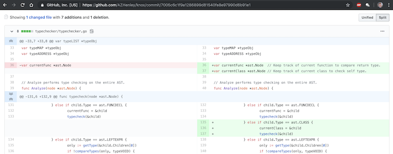
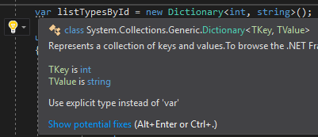

I work on software.
TL;DR: Type inference is pushed by many tools and languages, but there is little evidence that it is beneficial. I argue that it may hinder comprehension and increase cognitive load.
To see the discussion about this article, see the post on Hacker News.
Many programming languages provide type inference. A new wave of hip languages have it baked in: Go, Rust, Swift, Scala, Kotlin, Zig, Nim, etc. In fact, even older languages have added it later on: C++11, C# 3.0, and Java 10.
Type inference refers to "the automatic detection of the data type of an expression" according to Wikipedia. Essentially, it means you don't have to explicitly declare a variable's type when it can be inferred from an assignment. So instead of:
int x = 5; List<String> names = new List<String>();
You can do:
var x = 5; var names = new List<String>();
So what are the benefits? Well, Wikipedia claims type inference "makes many programming tasks easier" but there is no citation for that. The code snippet above using type inference does look a bit cleaner at first glance. Hmmm. We will come back to this.
You might think, "ok, I'll just not use it" if it is bad. But if you try to avoid it in Go, you will get warnings! Go's linter says that you "should omit type X from declaration of var Y; it will be inferred from the right-hand side". Moreover, all of the examples from Effective Go follow this practice.

While reading code, it is often necessary for me to understand the types of each expression. So if I'm using type inference, how do I know the type of a given variable? It is easy if it is a literal. If a variable or function is named well then it is also straight forward, usually. If it isn't obvious, I may need to navigate to a function declaration to see the return type. Worst case I make a bad assumption. A few examples from production code:
var fieldName = "BuildingCode"; // Easy.
var entries = new Dictionary<String, String>(); // Easy.
var currentID = searchLog(fieldName)[0]; // I can make a good guess.
var site = repo.GetSites().Where(x => x.SiteType == SiteTypes.Server); // I can make a decent guess.
var pdfMap = new Lazy<T>( () => { MapEngine.CreateMap(this.x, this.y, this.zoom) } ); // Not what I expected.
Tools help a lot with this. In most code editors you can hover the mouse over a variable name and it will show a tooltip with the type. You can also use a nice shortcut to jump to a function or class declaration to really dive in.
However, these seemingly quick actions may have an additional cost: cognitive load, which refers to the mental effort required. Imagine you're told to calculate 3+9+15+18+5. This is trivial on paper. But if asked verbally, even this simple arithmetic can be taxing since you must actively remember the expression and perform the calculations.
There are already a lot of details to consider when comprehending code. I don't want to make this even more difficult on myself by having to remember variable types or have to constantly navigate away to look it up.
And what if you aren't using your code editor? What if you are viewing the code on GitHub? No type information for you!
You certainly don't always have to use type inference. Others have come up with best practices for when to use type inference (e.g., these and these). Another developer listed the benefits of explicit typing to include code-as-documentation and enabling them to follow a Test Driven Development-like process.
Microsoft seems to have even switched their stance on using type inference all over the place in C#. Since 2017, Visual Studio will give a suggestion to "use explicit type instead of 'var'". In fact, MSDN explains to use the explicit type "to improve the code's readability" and to reserve using type inference for anonymous types.
People have argued that type inference actually improves readability by removing redundant information from the code that gets in the way. Besides, if you do need to inspect the type, it only takes a second or two to see.
A more motivating example for type inference:
for (Map.Entry<Integer, Map<Integer, SomeObject<SomeObject, T>>> row : table.entrySet()) {
Integer rowKey = entry.getKey();
Map<Integer, SomeObject<SomeObject, T>> rowValue = entry.getValue();
for (Map.Entry<Integer, SomeObject<SomeObject, T>> col : rowValue.entrySet()) {
Integer colKey = col.getKey();
SomeObject<SomeObject, T> colValue = col.getValue();
doSomethingWith<SomeObject<SomeObject, T>>(rowKey, colKey, colValue);
}
}
My response? Go refactor your hideous code.
A weaker argument I have heard is that you have less code to type with type inference! Because my typing speed is definitely the bottleneck when coding.
Before every language designer blindly accepts type inference as a good thing, I propose that some research be conducted. Yes, it will take some effort but luckily, researchers in the PL, SE, and HCI communities are quite clever and are always looking for interesting projects!
I hope to post my ideas for study designs in the future. I'm also crafting the Knox programming language to experiment with explicitness over brevity (It is very early in development!).